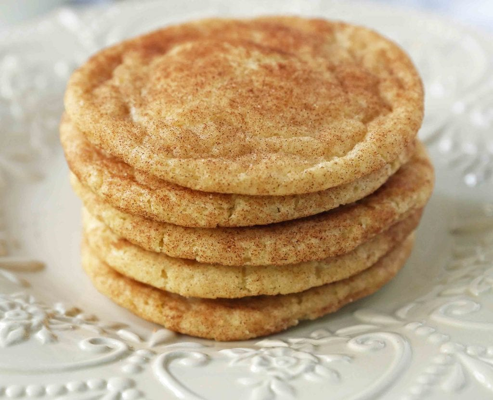

Snickerdoodle Recipe

Description
This was one of the first cookie recipes I made as a kid. As I have shared before, I was fully obsessed with cookbooks as a little girl. My Mom collected church cookbooks and I would go straight to the cookie recipes and beg my Mom to let me whip up a batch. I made this snickerdoodle cookie recipe 30 years ago and it is still the best I have ever tasted.
Ingredients
- 1 cup Unsalted Butter (softened)
- 1 1/2 cups Sugar
- 2 large Eggs
- 2 teaspoon vanilla
- 2 3/4 cup Flour
- 1 1/2 teaspoon Cream of Tartar
Steps
- Start by creaming butter and sugar for 4-5 minutes.
- Preheat oven to 350 degrees.
- In a large mixing bowl, cream butter and sugar for 4-5 minutes until light and fluffy. Scrape the sides of the bowl and add the eggs and vanilla. Cream for 1-2 minutes longer.
- Stir in flour, cream of tartar, baking soda, and salt, just until combined.
- n a small bowl, stir together sugar and cinnamon.
- Place on a parchment paper-lined baking sheet. Bake for 9-11 minutes. Let cool for several minutes on baking sheet before removing from the pan.